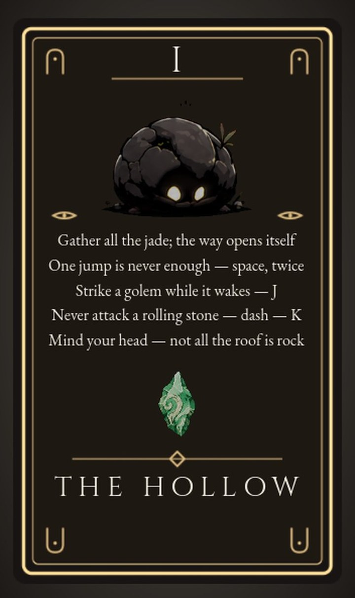
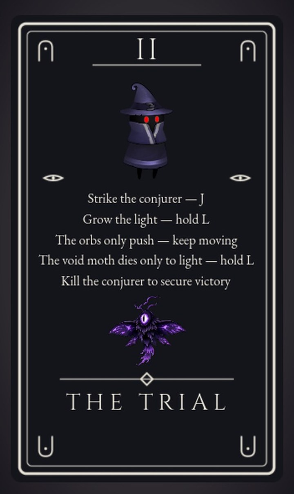
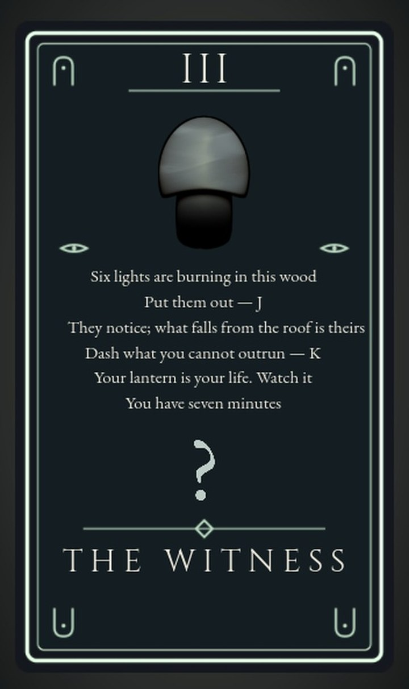
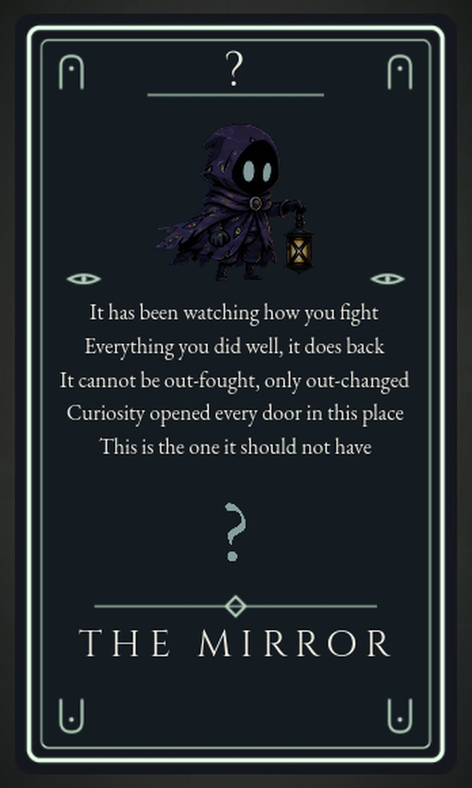

Curiosity'sDoors
A traveller wakes holding a lantern they don't remember lighting. There are doors. That is the whole invitation.
Play it in a browser →The way in
Press Begin and the painting goes out.
For the next forty seconds a voice types itself onto black, one line at a time. It talks straight at you. It knew you were coming.
By the time it stops it has told you three things and explained none of them: you did not choose to come, the wanting was put in you on purpose, and there are three doors ahead. Then you are standing in a cave.
The doors come one at a time. Finishing a realm opens the next.
I
The Hollow
A warm ember cave, and the first descent. Seventeen pieces of jade are scattered across a course of stone ledges and drifting planks, and the way out will not open until every one of them is found.
Some of the stone is awake
Boulder golems sit curled on the floor, the same colour and shape as the rock around them, until you come close enough. Then they uncurl and charge the length of the cave. Three more lie bedded into the moving platforms, so a plank you were about to land on stands up under you. Four hang buried in the ceiling and drop where you are about to be.
A rolling one will take the hit and keep coming. You get it in the half-second it takes to wake, or you dash and let it go past.
The card never says what the jade is. Neither does the cave. You find that out in the last five minutes of the game.
All the instruction you get
Every realm hands you one card at the door. It names the threat and the answer to it in five lines, then stops explaining and lets you walk in.
# the whole of Realm 1's teaching layer
Gather all the jade; the way opens itself
One jump is never enough — space, twice
Strike a golem while it wakes — J
Never attack a rolling stone — dash — K
Mind your head — not all the roof is rock

The first door
A door is built out of
the place it leads to.
This is the rule the whole game hangs on. Every doorway is grown on the spot, out of the art of the realm it opens onto.
Everything around this arch is ember and stone, because this is the ember cave. The arch is violet and fungal, because the next realm is violet and fungal. You can see where you are going before anything tells you, and the cave has visibly been broken open to let it through.
The doorway arrives late. The seventeenth piece of jade arms it, and walking into the pocket at the end of the cave makes it write itself out of the ground while you stand there.
Between realms, a card
“You will not fall, nor rise.”
— Fear
(Written by Silence — Advika Kohli)
II
The Trial
Curiosity walks in onto flat violet moss. A storm arrives, the ground shakes, and the middle of it tears loose and starts to climb with her standing on it.
It keeps going. There is no height to reach and no timer. The island rises for as long as the thing that raised the storm is still standing.
The storm has an author
About twelve seconds into the climb a conjurer flickers into existence at the far end of the deck and begins his trial, teleporting across it and conjuring rune orbs. The orbs cannot be killed. They roll after you and shove, and the deck has edges.
A void moth circles above the deck. Her sword passes straight through it. The moth lives on no layer her swing can reach, and it dies to light. Hold the lantern open and the glow swells; keep that glow on the moth for four seconds and the void burns out of it.
The realm is the same violet as the cloak. Nobody mentions that.
The second card
Five lines again. The card names what will kill you and what to do about it, then stops. How long the climb runs, how much the conjurer can take, what the moth is for — you find all of that out by being there.
# the whole of Realm 2's teaching layer
Strike the conjurer — J
Grow the light — hold L
The orbs only push — keep moving
The void moth dies only to light — hold L
Kill the conjurer to secure victory

The second door
The same law,
one realm on.
Realm 2 is violet from the moss to the moth. The doorway standing in the middle of it is teal and fungal, because Realm 3 is a teal fungal forest. What you see through the arch is a real photograph of the place it opens onto.
It waits for the deck to go quiet. The conjurer falls, his last orbs roll off the edges on their own, and only then does the doorway start to grow. A way out written into a deck that is still a hazard reads as two scenes playing at once.
Each post is two enormous fungal hills. A vertical run of small arch-shaped pieces reads as a ladder no matter how much you jitter it; that one was learned twice before it was believed.
And again, one realm on
“It waits, knowing I will ask questions, knowing I will test boundaries, knowing I will step through myself even though it has already seen the answer.”
— Curiosity
(Written by Silence — Advika Kohli)
III
The Witness
A teal fungal forest that grew over the ruins of a library of the dead. Mycelium feeds on dead matter, and this forest has been feeding on an archive of ended lives.
Six lights are burning in the wood. The card does not say what they are. They turn out to be creatures, six of them across twelve thousand pixels of forest, spaced far enough apart that meeting one is an event. The last two stand together, so the final fight is the hardest thing the forest asks for.
Seven minutes
An hourglass in the corner gives you seven minutes for all six. Run out and the forest starts over, and says one thing on its way out.
Your lantern is your health bar. It has been since the first cave. This is the realm that makes you watch it.
The third card
This is the only card that names a number out loud. The seven minutes are printed on it because a time limit you discover by losing is a trick.
# the whole of Realm 3's teaching layer
Six lights are burning in this wood
Put them out — J
They notice; what falls from the roof is theirs
Dash what you cannot outrun — K
Your lantern is your life. Watch it
You have seven minutes

?
The Mirror
The sixth light goes out and the colour drains out of the forest over nine seconds. Nothing announces it. The green stops being there, and something is standing in what is left, wearing your face.
It fights with your habits. A profile of how you play has been building since the first cave — how close you stand, how fast you swing, which way you dodge, how much of a fight you spend in the air — and the mirror is assembled out of that profile. Everything you do well, it does back.
So playing better feeds it. The way through is to play like somebody else, which is the one thing it has no recording of.

And then it talks to you
The mirror falls and something starts speaking. You never fight it. It has been there since the first cave, and it has been counting.
By the time it stops, all three realms behind you mean something else, including the seventeen pieces of jade you spent the first one collecting.
The rest of it is in the game.
How it is built
Every realm is a script.
The realms are built by code. Each one reads an art pack and assembles its own world at load: platform runs, ceiling teeth, vegetation, fog banks, parallax bands, creature placement. Re-tuning the cave means changing a constant and watching four hundred objects move.
Every part boots alone. Any beat in the game starts straight from an environment variable — the third realm's boss, the doorway animation, the ending. Working on the last fight takes seconds to reach. Every screenshot and every card in here was captured that way, out of the running game.
It ships on every merge.
A push to main
triggers a GitHub Action that re-exports the game to WebAssembly and publishes
it. The play link in here is always the current build.
# There is no RigidBody2D anywhere in this project, # so every equation of motion in the game is a line # someone chose. # Curiosity.gd — the drifting-traveller tuning @export var gravity: float = 460.0 @export var jump_velocity: float = -356.0 # Both well under the usual ~980. Height goes as v0²/2g # and air time as 2v0/g, so lowering both keeps the jump # the same size while roughly doubling the hang. func _physics_process(delta: float) -> void: if not is_on_floor(): velocity.y += gravity * delta velocity.x = move_toward(velocity.x, target_x, accel * delta) move_and_slide()
Semi-implicit Euler, written out by hand, sixty times a second.
Open the first door
It runs in a tab.
Nothing to install.
nex2406.github.io/curiositys-doors
Arrow keys or A/D to move, shift to run, space to jump, J to swing, K to dash, L to hold the lantern open, Y to step through a door. Seventeen pieces of jade are waiting in the first cave.